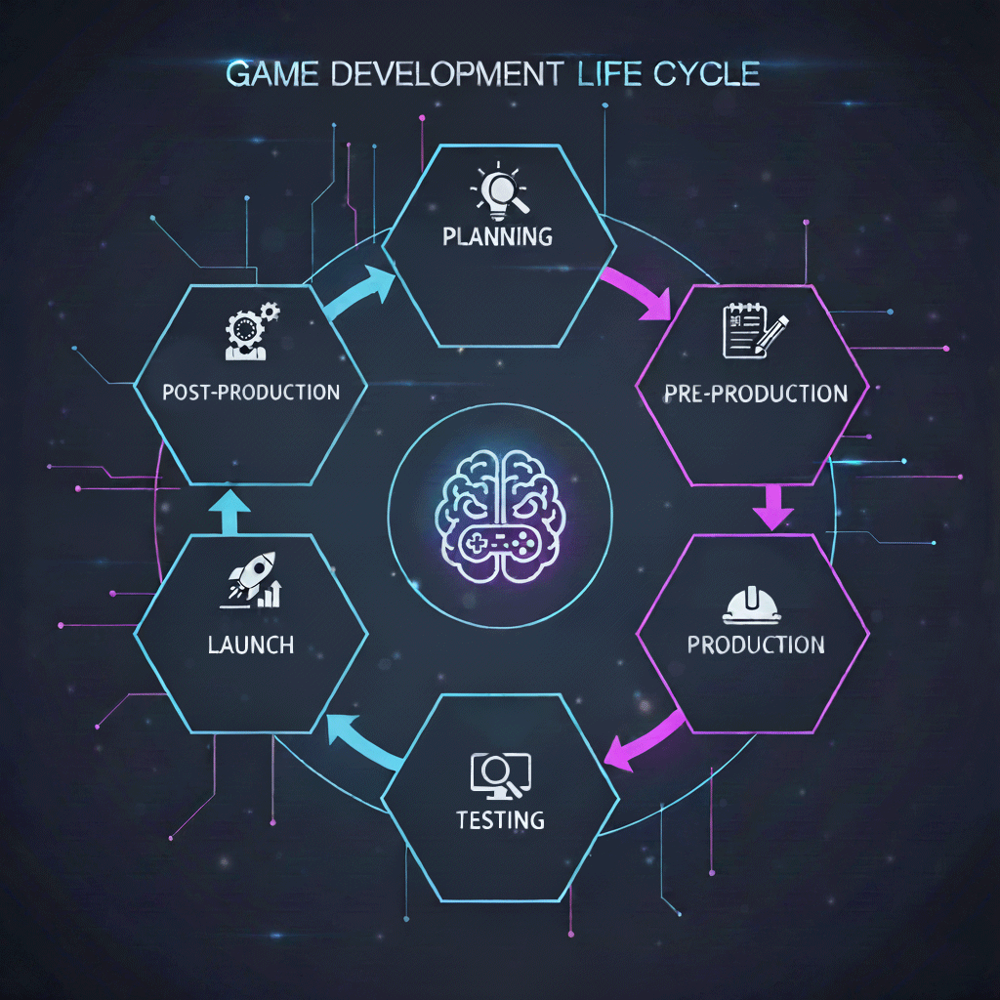

QA Flashcards
1. База: що таке тестування
- Software Testing — процес перевірки ПЗ, щоб виявити дефекти та переконатися, що продукт відповідає вимогам.
- Defect — помилка в коді, вимогах або дизайні.
- Bug — прояв дефекту під час виконання програми (коли бачиш некоректну поведінку).
- QA (Quality Assurance) — процесний підхід: стандарти, правила, покращення процесу розробки, щоб запобігати дефектам.
- QC (Quality Control) — робота з самим продуктом: тестування, рев’ю, інспекції, щоб знайти дефекти.
2. Методи та типи тестування
Методи (як ми тестуємо — доступ до коду)
- Black Box — тестуєш функціонал, не знаючи коду. Робота тільки з вхідними / вихідними даними.
- White Box — тестування з повним доступом до коду та логіки (гілки, умови, покриття коду).
- Grey Box — часткове знання внутрішньої логіки (структура БД, API, архітектура).
Типи (що саме / з якою ціллю тестуємо)
- Functional testing — перевірка, що система робить те, що прописано у вимогах.
- Non-functional testing — продуктивність, безпека, юзабіліті, сумісність тощо.
- За ступенем: manual та automation.
- За стабільністю: Smoke, Sanity, Regression тощо.
3. Рівні тестування
- Unit Testing — тестування окремих функцій / класів / методів. Найчастіше роблять розробники.
- Integration Testing — перевірка взаємодії між модулями (фронт ↔ бек, сервіс ↔ БД).
- System Testing — тестування всієї системи як єдиного цілого в середовищі, наближеному до продакшену.
- Acceptance Testing (UAT) — приймальне тестування, яке проводять замовники / користувачі перед релізом.
4. Функціональне тестування (основні види)
| Тип тестування | Опис | Коли застосовується / мета |
|---|---|---|
| Smoke Testing | Швидка поверхнева перевірка критичного функціоналу після нової збірки. | Вирішити, чи взагалі має сенс продовжувати тестування цієї збірки. |
| Sanity Testing | Перевірка конкретних змін / фіксів. | Упевнитися, що певна функція працює після виправлення або невеликих змін. |
| Regression Testing | Повторне тестування вже перевіреного функціоналу після змін. | Переконатися, що новий код не зламав те, що працювало раніше. |
| Exploratory Testing | Дослідницьке тестування без жорстких сценаріїв. | Швидко знаходити неочевидні дефекти, вивчаючи поведінку системи. |
| Ad-hoc Testing | Неформальне тестування без документації. | Шукати баги на основі інтуїції та досвіду. |
| Positive Testing | Тестування з коректними даними. | Перевірити, що система працює згідно з вимогами при правильному використанні. |
| Negative Testing | Тестування з некоректними даними та діями. | Перевірити, як система поводиться з помилками користувача / невалідними даними. |
| Boundary Value Testing | Перевірка граничних значень: мінімум, максимум, трохи нижче / вище меж. | Виявити проблеми з обробкою крайніх значень і діапазонів. |
| Equivalence Partitioning | Поділ вхідних даних на класи еквівалентності (валідні / невалідні). | Зменшити кількість тестів, зберігши адекватне покриття. |
5. Життєвий цикл бага (Bug Life Cycle)
Bug Life Cycle (життєвий цикл дефекту) — це послідовність статусів, через які проходить баг від моменту виявлення до повного закриття. Розуміння цього циклу допомагає QA, девелоперам і менеджерам правильно відслідковувати стан дефектів.
Типові етапи Bug Life Cycle
- New — тестувальник створює баг-репорт. Дефект описаний, задокументований, але ще не призначений відповідальному.
- Assigned — баг призначений конкретному розробнику або команді. Хтось офіційно відповідає за його виправлення.
- In Progress / Open — розробник працює над фіксом: відтворює проблему, аналізує причину, змінює код.
- Fixed — розробник вніс зміни в код і вважає, що проблема усунута. На цьому етапі баг ще не вважається закритим.
- Ready for Retest / To Verify — збірка з фіксом потрапила на тестове середовище, і дефект готовий до перевірки тестувальником.
- Retest — QA виконує кроки відтворення, перевіряє, чи дійсно проблема зникла, і чи не з’явилися побічні ефекти.
- Closed — дефект більше не відтворюється, всі пов’язані сценарії працюють коректно. Баг офіційно закривається.
- Reopened — якщо під час ретесту або в наступних збірках проблема знову проявилась, баг відкривають повторно й цикл проходиться ще раз.
- Deferred / Postponed — виправлення відкладено (низький пріоритет, мало впливає на користувача, немає ресурсів прямо зараз).
- Rejected / Won’t Fix — дефект не вважають проблемою (наприклад, очікувана поведінка або дублікат іншого бага), тому його не будуть виправляти.
Роль QA у Bug Life Cycle
- коректно описати дефект: кроки, очікуваний та фактичний результат;
- проставити пріоритет і серйозність (severity / priority);
- слідкувати за зміною статусів і нагадувати, якщо критичні баги “висять”;
- ретельно ретестити після фіксу та вирішувати, чи можна закривати дефект.
6. Чек-листи, тест-кейси та баг-репорти
6.1. Чек-лист (Checklist)
Чек-лист — перелік коротких перевірок без детальних кроків. Використовується для швидких проходів, smoke, sanity, дослідницького тестування.
- одна перевірка — один пункт;
- мінімум тексту, максимум конкретики;
- добре підходить як для GameDev, так і Web UI.
[ ] Головне меню: кнопка "New Game" активна та працює
[ ] Модель персонажа не провалюється під землю на старті
[ ] Налаштування гучності зберігаються після рестарту гри
[ ] Квест-трекер оновлюється після виконання завдання
Приклад Web чек-листа:
[ ] Логотип на головній сторінці відображається коректно
[ ] Поля Email / Password помітні та активні
[ ] Кнопка Login активна при валідних даних
[ ] Верстка не ламається на ширині 360px
[ ] Валідація Email працює (некоректні значення блокуються)
6.2. Тест-кейс (Test Case)
Тест-кейс — формалізований сценарій із чіткими кроками, тестовими даними та очікуваним результатом.
- ID — унікальний номер;
- Назва — що перевіряємо;
- Передумови (Preconditions);
- Кроки (Steps);
- Очікуваний результат;
- Фактичний результат / Статус — під час тесту.
ID: TC-GAME-001
Назва: Створення нового сейву
Preconditions: Гра запущена, головне меню
Steps:
1. Натиснути "New Game"
2. Дочекатися завантаження рівня
Expected Result: Гра стартує з початкового рівня, створено новий сейв
Web тест-кейс:
ID: TC-WEB-002
Назва: Авторизація з валідними даними
Preconditions: Користувач існує в БД
Steps:
1. Ввести валідний email
2. Ввести валідний пароль
3. Натиснути "Login"
Expected Result: Користувача перенаправляє на Dashboard
6.3. Баг-репорт (Bug Report)
Баг-репорт — опис дефекту з чіткими кроками відтворення, очікуваним та фактичним результатом.
- Title — що зламано і де;
- Environment — платформа, збірка, браузер;
- Steps to Reproduce — нумеровані кроки;
- Expected / Actual result;
- Severity / Priority;
- Attachments — скріни/відео/логи.
Title: [PC] Крашається гра при завантаженні сейву "Forest"
Environment: PC, build 1.0.0.1234, Win10, RTX 3060
Steps:
1. Відкрити меню Load Game
2. Обрати сейв "Forest_AutoSave_01"
3. Натиснути "Load"
Expected: Рівень успішно завантажується
Actual: Гра крашиться через 3–4 секунди
Severity: Critical
Web баг-репорт:
Title: [WEB] 500 Error при відправці форми "Contact Us"
Environment: Chrome 124, Win11
Steps:
1. Заповнити форму
2. Натиснути "Send"
Expected: Повідомлення "Message sent"
Actual: Сервер повертає HTTP 500
Severity: Major
1. SDLC — Software Development Life Cycle
SDLC (Software Development Life Cycle) — це
життєвий цикл розробки програмного забезпечення.
Definition (EN): SDLC is a structured process
that defines all phases of software development, from idea and
requirements to release and maintenance.
SDLC описує усі етапи створення ПЗ і допомагає зробити розробку прогнозованою, контрольованою та якісною.
Типові етапи SDLC
- Planning — визначення цілей продукту, бізнес-потреб, обсягу робіт, ризиків і приблизних строків/ресурсів.
- Requirement Analysis — збір і аналіз вимог, уточнення функціоналу, узгодження очікувань замовника й користувачів.
- Design — розробка архітектури системи, продумування модулів, інтеграцій, структури БД, інтерфейсів.
- Implementation / Development — безпосереднє написання коду, реалізація фіч, unit-тести, інтеграція модулів.
- Testing — перевірка продукту (функціональне, нефункціональне тестування, регрес, UAT тощо).
- Deployment — розгортання на продакшені, реліз до кінцевих користувачів.
- Maintenance — підтримка, фікси, оновлення, розвиток продукту після релізу.
2. STLC — Software Testing Life Cycle
STLC (Software Testing Life Cycle) —
життєвий цикл тестування програмного забезпечення.
Definition (EN): STLC is a set of phases that
describe the testing process, from test planning and design to
execution and test closure.
STLC зосереджується саме на процесі тестування всередині проєкту і є частиною SDLC.
Основні етапи STLC
- Requirement Analysis — тестувальники аналізують вимоги, шукають прогалини, ризики, уточнюють, що і як буде тестуватися.
- Test Planning — визначення стратегії, обсягу, підходів, ресурсів, інструментів і графіка тестування.
- Test Case Development — створення тест-кейсів, чек-листів, підготовка тестових даних та очікуваних результатів.
- Environment Setup — підготовка тестового середовища: стенди, БД, доступи, конфігурації, необхідні інструменти.
- Test Execution — виконання тест-кейсів, логування результатів, заведення баг-репортів.
- Test Cycle Closure — аналіз результатів, звіти про якість, висновки й рекомендації для наступних ітерацій.
3. SDLC vs STLC
SDLC і STLC тісно пов’язані, але відповідають за різні рівні процесу.
| SDLC | STLC |
|---|---|
| Описує повний життєвий цикл розробки ПЗ: від ідеї та вимог до підтримки після релізу. | Описує життєвий цикл тестування в межах SDLC: що робить QA від аналізу вимог до закриття тестового циклу. |
| Охоплює бізнес-аналіз, дизайн, розробку, тестування, деплой, підтримку. | Фокусується на аналізі вимог, плануванні, дизайні тестів, виконанні, звітності та поліпшенні процесу тестування. |
| Відповідає за успіх всього продукту. | Відповідає за якість продукту і вчасне виявлення дефектів. |
Коротко: SDLC — це “велика рамка” всього проєкту, а STLC — детальний опис того, як всередині цієї рамки працює тестування.
4. Висновки
- SDLC without STLC = ризик отримати функціональний, але “сирий” продукт.
- STLC without SDLC = тестування без чіткої стратегії та контексту проєкту.
- У реальному проєкті SDLC і STLC працюють разом і доповнюють одне одного.
1. SQL для QA (база)
Що потрібно знати джуну
- Розуміти, що таке таблиця, row, column, primary key, foreign key.
- Вміти читати й писати прості SELECT-запити.
- Фільтрація через WHERE: =, <>, >, <, BETWEEN, LIKE.
- Сортування через ORDER BY.
- Ліміти: LIMIT.
- Агрегації: COUNT, SUM, AVG, MIN, MAX + GROUP BY.
- Базове розуміння JOIN (INNER, LEFT).
Приклади базових запитів
-
SELECT * FROM users;— отримати всіх користувачів. -
SELECT id, email FROM users WHERE is_active = 1;— активні користувачі. -
SELECT * FROM orders WHERE created_at >= '2025-01-01';— замовлення за період. -
SELECT status, COUNT(*) FROM orders GROUP BY status;— скільки замовлень у кожному статусі. -
SELECT u.name, o.total FROM users u INNER JOIN orders o ON u.id = o.user_id;— користувачі + їхні замовлення.
2. HTTP та API для QA
HTTP базові поняття
- Request (запит) → що клієнт відправляє на сервер.
- Response (відповідь) → що сервер повертає.
- Методи: GET (отримати), POST (створити), PUT/PATCH (оновити), DELETE (видалити).
-
Статус-коди:
- 2xx — успіх (200 OK, 201 Created).
- 4xx — помилка клієнта (400 Bad Request, 401, 403, 404).
- 5xx — помилка сервера (500 Internal Server Error тощо).
Що перевіряє QA в API
- Чи коректний статус-код для кожної операції.
- Чи відповідає тіло відповіді (JSON) специфікації (поля, типи, обов’язкові значення).
- Обробка некоректних даних (negative testing).
- Перевірка авторизації / аутентифікації (доступ без токена, з неправильним токеном).
- Коректність обмежень (наприклад, не можна видалити чужі дані).
Приклад запиту (JSON)
- POST
/api/login
{
"email": "user@example.com",
"password": "Secret123"
}
0. Game Development Life Cycle (GDLC)
Game Development Life Cycle — це послідовність етапів, через які проходить гра від ідеї до підтримки після релізу. Для QA важливо розуміти, на якому етапі які ризики і що саме тестується.
Основні етапи GDLC
- Planning — ідея гри, цілі, цільова аудиторія, платформи, високорівневий віжн, ризики та приблизний бюджет.
- Pre-production — концепт-документи, GDD, прототипи, вибір технологій, чорнові UX/UI, планування пайплайнів контенту.
- Production — активна розробка: рівні, механіки, AI, анімації, контент, інтеграція систем, перші повноцінні збірки.
- Testing — інтенсивне функціональне тестування, баланс, перфоманс, стабільність, регресія build-to-build, підготовка до релізу.
- Launch — реліз гри на платформи, моніторинг метрик, гарячі фікси критичних багів, підтримка користувачів.
- Post-production — патчі, DLC, сезонні івенти, live ops, технічна підтримка й розвиток гри після запуску.
QA може залучатися на кожному етапі — від рев’ю документації на Pre-production до аналізу реальних краш-логів і відгуків гравців на Post-production.
1. GameDev QA: що тут особливого
- Багато уваги до ігрового досвіду: геймплей, баланс, відчуття керування.
- Критично важливі перфоманс та стабільність на різних платформах (PC, консолі, мобілки).
- Дуже багато візуальних багів: анімації, текстури, освітлення, UI, ефекти.
- Фізика та колізії: застрягання в геометрії, провал у текстури, некоректні стрибки.
- Сейви та прогрес: втрата прогресу — один із найболючіших багів.
- Мережеві режими (якщо є мультиплеєр): синхронізація, лаги, десинк, кік з сервера.
2. Типові види тестування в GameDev QA
| Тип | Що перевіряється | Приклад |
|---|---|---|
| Gameplay / Functional | Квести, механіки, боївка, інвентар, AI. | Квест коректно стартує, оновлює цілі, правильно завершується й дає нагороду. |
| Balance | Складність, дамаг, економіка, прогрес. | Бос не вбиває з двох ударів на найнижчій складності; валюта не фармиться надто легко. |
| Graphics / Visual | Моделі, текстури, шейдери, освітлення, UI. | У персонажа не відлітають очі; немає миготіння текстур; текст не вилазить за межі кнопки. |
| Physics / Collision | Зіткнення, стрибки, падіння, взаємодія з об’єктами. | Гравець не може пройти крізь стіну; не провалюється під мапу; предмети не літають рандомно. |
| Performance | FPS, фрізи, лаги, час завантаження рівнів. | FPS не падає нижче умовних 30/60 у критичних сценах; рівень вантажиться за адекватний час. |
| Compatibility | Робота на різних платформах / конфігураціях. | Гра стартує на мінімалках, не крашиться на конкретних відеокартах / консолях. |
| Network / Multiplayer | Синхронізація, матчмейкінг, відновлення підключення. | Якщо один гравець виходить, сесія не ламається; стани персонажів однакові в усіх клієнтів. |
| Regression (build-to-build) | Старі фічі після нової збірки. | Після фіксу одного квеста не зламались інші; сейви з попередньої версії коректно відкриваються. |
3. Особливості баг-репортів у GameDev
- Точний build / версія гри (наприклад, 1.0.0.1234 QA).
- Платформа: PC (конфіг), PS5, Xbox, Switch тощо.
- Рівень / локація: назва або ID мапи.
- Чіткі кроки відтворення (особливо для складних скриптових сцен).
- Expected vs Actual: що мало б статися і що сталося реально.
- Додатки: скріни, відео, сейви, логи (якщо доступні).
Тести / Quiz
Обери тему і пройди невеликий тест. Обирай варіанти відповідей, а потім переходь до наступного питання.